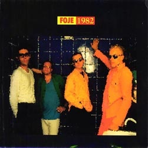

 |
1982 |
1982 yra paskutinis lietuviškas grupės Foje albumas, išleistas 1996 m. Jį įrašė du grupės nariai – Andrius Mamontovas ir Arnoldas Lukošius.
Andrius Mamontovas interviu Lietuvos rytui prisimena: Mes jį, galima sakyti, įrašėme dviese su Arnoldu Lukošiumi. Sėdėdavome studijoje MA per naktis dvi savaites. Sėdėdavome dviese, įsmeigę akis į kompiuterio ekraną, ir programavome. Darius Burokas ir Algis Kriščiūnas atvažiavo tik dviem dienoms. Įrašė savo partijas ir beveik tuojau pat išvyko namo."
- Andrius Mamontovas
- Arnoldas Lukošius
- Darius Burokas
- Algis Kriščiūnas
SKRISK
ei tu nežinai ką tu turi
dar tavo sparnai nepakirpti
kas žodžiai pikti tu nežinai
tu vis dar gali kilti aukštai
debesys dar neskuba pas mus
pasižiūrėk mėlynas dangus
pasinaudok šia puikia proga
arba šiandien arba niekada
aš noriu atspėt tavo mintis
jos tavo veide atmerk man akis
tu puikiai žinai paukščiai visi
skraido jie tam sutverti
skrisk kol dar gali
čia baigiasi žodžiai geri
hey hey hey
ka gero tu čia palikai
TUŠTI DELNAI
aš galiu suprast ką tu man sakai
aš girdžiu žodžius skambančius keistai
aš galiu matyt tai ką tu matai
aš turiu akis matančias naujai
aš galiu paliest aš turiu rankas
aš turiu dantis aš galiu įkast
aš turiu batus aš galiu išeit
aš turiu pirštus aš galiu pro juos žiūrėt
kai iškeliu rankas
pasaulio vidury
tai tik tušti delnai
ar tu daugiau turi
aš turiu vilties aš galiu gyvent
aš galiu kliedėt juoktis arba verkt
aš turiu ugnies aš galiu mylėt
aš turiu plaučius aš galiu įkvėpt
aš galiu kalbėt aš žinau žodžius
aš skiriu spalvas aš skiriu garsus
aš galiu mąstyt kai galva šviesi
aš tikiu visais tais kurie šventi
BALSAS
tai ką tu radai prieš tris dienas
šiandien jau gali išmesti lauk
tai ką parašei prieš tris naktis
šianakt jau gali ramiai išbraukt
vakar tu šaukei žvėries balsu
šiandien tu kalbi švelnius žodžius
tavo praeity yra klaidų
tu manai kad jų rytoj nebus
tai ką turi tau nepriklauso
tai ką gavai skirta ne tau
ar tu girdi angelo balsą
ten kur giliai plaka širdis
jei ją turi
ten kur gyvenai prieš tris žiemas
niekada daugiau neteks sugrįžt
tai dėl ko verkei prieš tris dainas
ši daina tikiu padės užmiršt
kelio pradžioje buvai švarus
pabaigą randi giliam purve
jeigu sutikai naujus draugus
nežinai ar jie išduos tave
TU VĖL ESI AKLA
bandai sau meluoti bet viską išduoda
tirpstantis sniegas tavo delne
tu nori įrodyt kad viskas vienoda
kad tobulą meilę matai tik kine
bet jo akių šviesa
vėl priverčia drebėt
tu vėl tapai akla
bet tu vėl gali mylėt
mačiau tave verkiant atstumtą ir vieną
mačiau tave bandant žudyti save
mačiau tavo kaukę pačiai tau nemielą
mačiau kaip nemoki paslėpt kas yra
ŽVAIGŽDĖS KARTAIS KRENTA
tau reikalingos draugo akys
kurios tau niekad nemeluoja
tu sapnavai kad švelnios rankos
kalnų gėles tau dovanoja
tu nežinai šiltesnio žodžio
už tą kurį išgirsti nori
tu nematei gražesnio veido
už tą kur tau nusišypsojo
bet tu verki kiekvieną naktį
nes tai ne jis šalia užmigo
tu dovanoji savo meilę
taip pat lengvai kaip jis ją ima
ir tu jauti kaip tau vėl skauda
nes tu eini basa per stiklą
nes tai ka tu kas kartą gauni
dar niekada nebuvo tikra
žvaigždės kartais krenta
priešas tau ištiesia ranką
skausmas būna mielas
saugok savo sielą
tu palikai tuos kur mylėjai
ir tuos kurie tau nepatiko
ir jie visi iš čia išėjo
nes jie taip pat tave paliko
ir tu gali pakelt į dangų
tuščias akis jei jos dar mato
galbūt dar liko lašas meilės
juk tau tikrai užteks tik lašo
DAR ILGAI
žydinčios pievos begalinis dangus
ten kur baigiasi žvaigždės ten kur mūsų nebus
nenutylančios dainos aukso upėmis plauks
tiktai ten kur jos teka mūsų niekas nelauks
dar dar ilgai
ištiestos rankos atlapoti langai
bet dar tūkstačius metų tai ne mūsų namai
visos purvinos mintys visi žodžiai tušti
mums neleis ten sugrįžti kol nebūsim laisvi
tol kol melas patenkins ir tave ir mane
mes kentėsim ir degsim šiame pragare
TAMSIAUSIA VALANDA
pirmadienį anksti ryte aš netikėtai pabudau
ar dar kas nors pabudo šiam mieste
pati tamsiausia valanda prieš tai kai tuoj nušvis aušra
prieš tai kaip aš pažadinsiu tave
tamsiausia valanda
pačiam nakties gale
akimirka trumpa
didinga ir kvaila
paklydę tankiame miške mes baigiame tikėt sėkme
kai tie kurie išgelbės mus jau čia mes nebetenkame vilties
užmėtytam audros laive kaip tik tada kai krantas jau šalia
pirmadienį anksti ryte aš taip ir nebeužmigau
šviesa lange jau palietė akis
artėjo dar viena diena pilna paklydusių minčių
jas atnešė praėjusi naktis
SIDABRINĖS SVAJONĖS
tu atidavei viską kad galėtum turėti
savo suknistą laisvę nežinai kur ją dėti
vakar prašei šiandien gavai vis dar mažai
tu tiek daug paaukojai kad galėtum surasti
savo pasmerktą tiesą nežinai kur išmesti
sidabrinės svajonės visada išsipildo
tik ar tai ko tu nori tau padės būt laimingu
ALTERNATYVINĖ DAINA APIE MEILĘ
meilė tai peilis giliai žaizdoje
meilė tai stiklas suspaustas delne
meilė tai neužgesinta ugnis
meilė tai tavo ankstyva mirtis
meilė tai lūpdažio ženklas veide
meilė tai kraujas palikęs ryte
meilė tai tavo pilka dabartis
meilė tai vakar diena ir naktis
meilė tai žodžiai kaip niekad šalti
meilė apynasriai tau užsegti
meilė tai sąžinė tavo juoda
meilė tai budelio rankoj galva
meilė tai žmonės pavirtę vilkais
meilė tai adatos tau po nagais
meilė tai karstas užpiltas žeme
meilė tai tavo vieta pragare
meilė tai mūsų darbai purvini
meilė tai vardas kurio neturi
meilė tai stambios kupiuros delne
meilė tai kaulas šunies gerklėje
meilė tai tiesus elektros laidai
meilė tai paukštis įstrigęs tenai
meilė tai viskas ko nebeturi
meilė tai viskas ką gauti gali
PASKUTINIS TRAUKINYS
ar tu dar gali kentėti tas blogas mintis
ar tu dar gali matyt akis visai tuščias
ar tau malonu girdėt žodžius bukai piktus
ar dar tave įkvepia šalti žmonių veidai
kokia nuostabi diena ir koks švarus dangus
kokia neapsakoma gerų akių šviesa
ir tie kur apsidžiaugia jei kam nesiseka
negali uždengti to dangaus jų tiek nėra
paskutinis traukinys dar laukia
dar yra jame vieta laisva
paskutiniam vagone prie lango
kur ir man skirta vieta šalia
jei tu jau pasidavei užkask save giliau
jei tu negali tylėt dainuok garsiau
jei tu nori keist pasauli keisk pirmiau save
jei tu tamsoje aš ten taip pat buvau